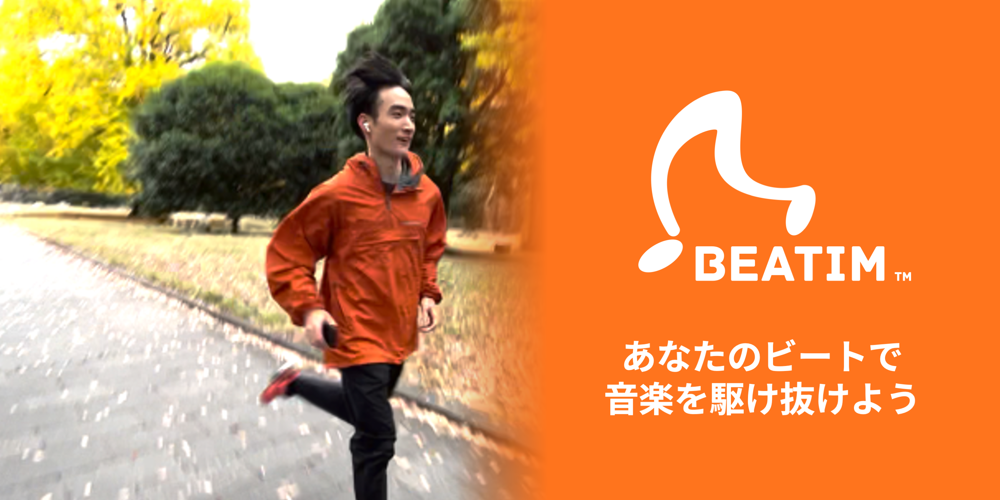

ランナーのペースをセンシングし、音楽のビートを早めたり遅めたりすることで、ペース維持をサポートするiOSアプリケーション。 An iOS application that senses a runner's pace and supports pace keeping by speeding up or slowing down the music beat.

ランニング中のペース維持は、身体感覚だけに頼ると難しく、通知や数値表示だけでは走行体験を途切れさせてしまいます。Beatim Runnerは、ランナーのペースをセンシングし、目標ペースとの差に応じて音楽のビートを自然に変化させることで、音楽に乗りながら走り続ける体験を設計しました。
Maintaining pace while running can be difficult when relying only on body sensation, while numerical alerts can interrupt the running experience. Beatim Runner senses the runner's pace and naturally changes the music beat according to the gap from the target pace, helping users keep running with the music.
Beatim Runnerの開発と社会実装を目的に「株式会社Beatim」を設立しました。App Storeにてアプリが配布されています。
Beatim Inc. was established to develop and socially implement Beatim Runner. The Beatim app currently distributed on the App Store is this runner-oriented pace support application.